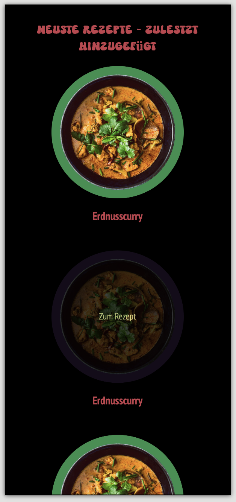

Website Pflanzlich Kochen
Als Semester-Hausarbeit im Zweier-Team entwickelte Plattform für vegane Rezepte und Wissenswertes („Pflanzlich Kochen“). Das Projekt umfasst ein responsives Banner-Design, modulare Rezeptseiten, ein Formular zum Einsenden eigener Kreationen und eine umfassende Code-Dokumentation.


Prozess
Idee & Gestaltung
Vegan heißt nicht nur grün und eintönig. Die Website sollte bunt, lebendig und wie ein kulinarisches Fest wirken. Deshalb gibt es knallige Farben auf schwarzem Hintergrund, auf dem sie durch den Kontrast noch stärker leuchten, und eine Discokugel als Logo.
Für Überschriften haben wir die verspielte Schrift „Another Nothing“ gewählt, für Fließtext die gut lesbare „PT Sans Narrow“ mit großzügigem Zeilenabstand.


HTML-Grundgerüst
Zuerst haben wir gesammelt, was auf die Seiten soll, und alle Inhalte als reines HTML angelegt, noch ohne Gestaltung und mit viel zu großen Bildern. Danach haben wir parallel an den einzelnen Seiten gearbeitet und das Design aus dem Style-Tile ins CSS übertragen.


Mobile First
Gestaltet haben wir zuerst für den kleinsten Bildschirm. Header und Footer sind mit display: grid aufgebaut, damit die Listenelemente nebeneinander stehen. Der Seitentitel wurde über Padding und Margin platziert, die Zwischenüberschriften sind rot, als Komplementärkontrast zum grünen Text.


Kreise & Farben
Weil Teller rund sind, zeigen alle Gerichte als Kreis von oben. Die Bilder sind dafür quadratisch zugeschnitten und mit border-radius: 50% und farbigem Rand versehen.
Das Farbkonzept besteht aus vier Paaren mit je einem hellen und dunklen Ton, angelegt als CSS-Variablen. Über Klassen bekommt jeder Rezeptblock eine eigene Farbe.


Banner & Navigation
Das Banner liegt über die ganze Breite unter dem Header und ist als background-image eingebunden. Ein leicht transparentes Schwarz dahinter hält die Navigation lesbar. Beim Überfahren mit der Maus wechseln die Links per a:hover zur Komplementärfarbe.

Rezeptseiten
Auch hier kamen zuerst alle Inhalte, dann das Kreisbild von der Startseite und die Anordnung der Texte. Zum Schluss haben wir die Discokugel mehrfach in ein Hintergrundbild gesetzt und schwer lesbare Texte mit einer Hintergrundbox versehen.


Responsive Layout
Größere Bildschirme werden nur über @media (min-width) ergänzt. Ab 775px wechselt das Raster auf zwei Spalten und der Text rückt neben das Bild. Ab 1160px stehen mehrere Rezepte in einer Reihe, der Text wieder unter dem Bild.